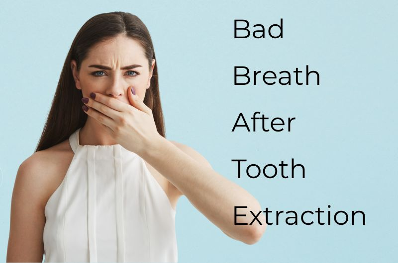

După orice extracție dentară, există situații normale la care vă puteți aștepta. Una dintre ele este respirația urât mirositoare. Poate încercați să vă acoperiți gura cu mâna în public sau când vorbiți, ca să nu se observe. Dar nu vă îngrijorați: respirația urât mirositoare după o extracție dentară este de așteptat și temporară. Important este să gestionați bine această situație.
Ce este normal după o extracție dentară?
Există câteva situații la care vă puteți aștepta după extracția unui dinte. Acestea pot varia de la o persoană la alta.
Iată câteva situații frecvente la care vă puteți aștepta după extracția dentară:
Durerea:
Este obișnuit să simțiți o oarecare durere și disconfort la nivelul maxilarului după ce trece efectul anesteziei locale. Acestea pot dura câteva zile. Dacă vi s-au prescris analgezice, luați-le conform indicațiilor.
Sângerarea:
După extracția unui dinte, alveola (spațiul din gingie) se umple cu sânge și formează un cheag sau o crustă, ca la o tăietură pe piele, pe care nu trebuie să o deranjați sau să o îndepărtați. Țineți limba, periuța de dinți și alimentele tari departe de cheag. Evitați folosirea paiului - aspirarea poate scoate cheagul din alveolă și poate provoca sângerare. În primele ore, din alveolă se poate scurge puțin sânge. Dacă credeți că sângerați excesiv, puteți aplica presiune cu comprese de tifon, mușcând ferm timp de 20-30 de minute. Repetați de 2-3 ori, dacă este necesar.
Umflătura:
Dacă extracția dentară a fost făcută chirurgical, este obișnuit să apară umflături la nivelul maxilarului și al obrajilor. De obicei, acestea se accentuează timp de 2-3 zile după intervenție, apoi încep să se amelioreze. Pentru a reduce umflătura, puteți aplica o pungă cu gheață înfășurată într-o cârpă sau un prosop pe exteriorul maxilarului în primele 24 de ore (cu excepția perioadei de somn)
Dificultăți la înghițire și la deschiderea largă a gurii:
Timp de câteva zile poate fi dificil să deschideți larg gura. De asemenea, în primele ore după intervenție poate fi dificil să înghițiți din cauza amorțelii, iar câteva înghițituri pot fi neplăcute din cauza disconfortului și a durerii. Unele persoane nu au dificultăți la înghițire.
Vânătăile:
După câteva zile, puteți observa vânătăi pe bărbie și pe gât, iar dacă faceți ușor vânătăi, acestea pot fi mai numeroase. De obicei, vânătăile dispar în una-două săptămâni.
Febra:
Puteți avea febră timp de 24-48 de ore după intervenție, cu o temperatură de peste 38°C. Puteți avea, de asemenea, greață sau vărsături. Acestea pot fi cauzate de intervenție, de sedative (medicamente folosite pentru a vă amorți gura și a vă ajuta să vă relaxați) sau de analgezicele folosite în timpul intervenției. Situația se va ameliora cu timpul. O temperatură corporală crescută poate fi cauzată și de un aport insuficient de lichide; aveți grijă să beți suficiente lichide.
Respirația urât mirositoare:
Respirația urât mirositoare este frecventă după extracția dentară și poate avea diverse cauze. Veți găsi detaliile în paragrafele următoare.
Alveolita (alveola uscată):
Alveolita este o afecțiune dureroasă care nu cedează la analgezice și poate apărea după orice extracție dentară. În funcție de intensitatea durerii, s-ar putea să fie nevoie să veniți la clinică pentru tratament.
De ce apare respirația urât mirositoare după o extracție dentară?
Cauzele respirației urât mirositoare:
Respirația urât mirositoare după extracția dentară este destul de frecventă și face parte din procesul de vindecare. De obicei, nu este un motiv de îngrijorare imediată. Iată câteva motive frecvente pentru care puteți avea respirație urât mirositoare după o extracție dentară:
Infecția:
Infecția poate apărea atunci când bacteriile pătrund în plaga deschisă rămasă după extracția dentară. Dacă locul plăgii se infectează cu bacterii după extracție, poate produce un miros neplăcut, pe care respirația îl transportă în afara gurii. În aceste cazuri, respirația urât mirositoare este adesea însoțită de febră, puroi și durere puternică. Dacă aveți simptome de infecție, mergeți imediat la medicul stomatolog. Infecțiile bacteriene netratate pot duce la probleme de sănătate mai grave.
Sângerarea postoperatorie și cheagurile de sânge:
După o extracție dentară, este obișnuit ca alveola să se umple cu sânge și să sângereze în primele ore. Astfel se formează un cheag, la fel ca la o tăietură pe piele. Cheagurile de sânge din gură pot deveni un mediu propice pentru bacteriile anaerobe, care se dezvoltă fără oxigen. Aceste bacterii fermentează și răspândesc mirosul neplăcut. Sângele care se acumulează în gură poate provoca un miros și un gust neplăcut, mai ales noaptea.
Alveolita (alveola uscată):
Alveolita este o afecțiune dureroasă care poate apărea după extracția dentară. Ea apare atunci când cheagul de sânge din alveolă nu se formează corect sau se desprinde, lăsând osul expus. Osul expus creează un mediu în care sunt reținute resturi alimentare și bacterii, permițându-le să se înmulțească și să producă substanțe urât mirositoare. Alveolita poate fi recunoscută dacă durerea persistă după ce durerea inițială a intervenției s-a calmat. Gustul neplăcut și mirosul urât din gură sunt simptome ale alveolitei. Este mai frecventă la maxilarul inferior, la femei (mai ales la cele care iau anticoncepționale) și la fumători.
Igiena orală deficitară:
După o extracție dentară, periajul în jurul zonei extracției poate fi neplăcut, iar mulți oameni evită periajul sau se periază superficial. Acest lucru poate duce la acumularea plăcii bacteriene pe dinți și gingii, iar resturile alimentare se pot bloca între dinți sau în alveolă și pot începe să se descompună. Deoarece în gură există o plagă, după extracția dentară este mai important ca oricând să mențineți o bună igienă orală pentru a preveni infecția.
Gura uscată:
Gura uscată este o afecțiune care apare atunci când gura nu produce suficientă salivă. Saliva are un rol important în menținerea gurii curate și umede, eliminând resturile alimentare și bacteriile, iar scăderea producției de salivă poate împiedica desfășurarea corectă a acestui proces de curățare, provocând respirație urât mirositoare. Gura uscată este un efect secundar frecvent al multor analgezice prescrise după extracția dentară. Ea poate apărea inițial și în timpul intervenției, din cauza gurii deschise sau a anestezicelor folosite. Pentru a combate gura uscată, este important să mențineți interiorul gurii umed bând multă apă.
Resturile alimentare blocate în alveolă:
Poate dura câteva săptămâni până când gingia acoperă complet alveola dintelui extras. Până la închiderea completă a alveolei, este probabil ca resturile alimentare să se blocheze în ea, ceea ce poate provoca respirație urât mirositoare și un gust neplăcut în gură. Clătirea gurii cu apă sărată poate ajuta la menținerea curățeniei.
Când dispare respirația urât mirositoare?
De obicei, respirația urât mirositoare dispare în una-două zile după reluarea periajului regulat și a clătirilor cu apă sărată (după 24 de ore).
Ar trebui să merg la stomatolog dacă respirația urât mirositoare persistă?
Dacă respirația urât mirositoare persistă sau este însoțită de alte simptome, precum durere puternică, umflătură în creștere, secreție de puroi sau febră, poate fi semnul unei probleme mai grave, cum ar fi o infecție sau alveolita. În acest caz, va trebui să mergeți la medicul stomatolog.
Ce trebuie făcut pentru a preveni sau gestiona respirația urât mirositoare după o extracție dentară?
Iată ce trebuie să faceți pentru a preveni sau gestiona respirația urât mirositoare după extracția dentară:
- Mențineți o bună igienă orală. Cea mai importantă și eficientă metodă de a trata respirația urât mirositoare este menținerea unei bune igiene orale.
- Nu vă clătiți gura în primele 24 de ore. Clătirea gurii poate desprinde cheagul de sânge și poate face ca sângerarea să reînceapă.
- La 24 de ore după extracție, începeți cu o clătire ușoară cu apă sărată călduță. Repetați de 3-4 ori pe zi, mai ales după mese. Vă puteți clăti mai energic pe măsură ce plaga din gingie se vindecă. În primele 7 zile, nu vă clătiți cu nimic altceva decât cu apa de gură prescrisă sau cu ser fiziologic.
- Periați-vă dinții, dar începeți după primele 24 de ore. Folosiți o periuță cu peri moi și periați cu blândețe în jurul zonei extracției. Periați-vă și limba, deoarece aceasta poate purta bacterii care provoacă respirație urât mirositoare.
- Folosiți ața dentară cu blândețe și aveți grijă să nu deranjați zona plăgii.
- Hidratați-vă. Consumul abundent de apă ajută la prevenirea gurii uscate și reduce respirația urât mirositoare, eliminând bacteriile din gură.
- Nu consumați alimente sau lichide fierbinți în primele 24 de ore; în acest timp puteți mânca și bea alimente și lichide reci și moi.
- În primele 2-3 zile, alegeți alimente moi, precum supa, iaurtul, budinca, înghețata etc. Alimentele moi nu vor rupe firele de sutură și nu se vor bloca în alveolele goale.
- Evitați alimentele tăioase, aspre sau lipicioase.
- Țineți alimentele tari sau greu de mestecat departe de zona alveolei goale până când mestecatul devine confortabil.
- Evitați alimentele cu miros puternic sau condimentate.
- Nu atingeți și nu îndepărtați cheagul de sânge cu limba, cu periuța de dinți sau cu alimente tari.
- Nu folosiți paiul. Aspirarea poate desprinde cheagul.
- Evitați scuipatul excesiv.
- Evitați fumatul și alcoolul.
- Fumatul poate încetini vindecarea și poate crește riscul de infecție sau de alveolită. De asemenea, poate provoca gură uscată și poate crește riscul de sângerare. Evitați alcoolul în primele 24 de ore.
- Evitarea efortului fizic intens în primele 24 de ore va ajuta vindecarea.
- Pe lângă consumul de apă, încercați să mestecați gumă fără zahăr sau să sugeți pastile/bomboane fără zahăr pentru a combate gura uscată.
- Urmați instrucțiunile de îngrijire postoperatorie primite de la medicul stomatolog sau de la chirurg.
Respirația urât mirositoare după extracția dentară: întrebări frecvente
Apare respirația urât mirositoare după fiecare extracție dentară?
Este posibil ca respirația urât mirositoare să nu apară după fiecare extracție dentară, dar respirația urât mirositoare după extracție (halitoza) este o complicație secundară foarte frecventă. Este deosebit de frecventă după extracția măselelor de minte.
Ar trebui să periez și alveola atunci când îmi periez dinții?
Nu, nu periați direct alveola după extracția dentară. În loc să periați direct alveola în timpul procesului de vindecare, cea mai bună abordare este să mențineți zona curată prin clătiri ușoare cu apă sărată după primele 24 de ore și să periați cu atenție restul dinților.
Cât durează respirația urât mirositoare după extracția dentară?
De obicei, dispare în una-două zile după ce începeți să vă periați dinții de două ori pe zi și să vă clătiți regulat gura.
Ce ar trebui să fac dacă respirația urât mirositoare nu dispare după extracția dentară?
În mod normal, respirația urât mirositoare se ameliorează la 1-2 zile după extracția dentară. Totuși, dacă persistă, poate exista o altă cauză subiacentă. În acest caz, ar trebui să mergeți la medic pentru un control.